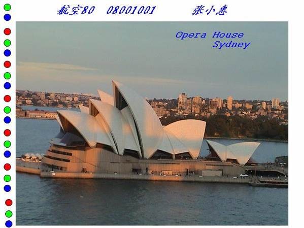

图像实验题目2：处理图像
实验要求：
从电子教室中下载“多媒体实验_图像处理.rar ”文件，将压缩文件中的opera_house_01.jpg～opera_house_09.jpg等9幅小的图像拼接为一幅大的图像。注意：拼接过程中不要缩放小图像；其中有一幅小图像需要水平翻转后再拼接。将拼接后的图像在水平和垂直方向上同时拉伸56%。在图像的合适位置书写图像名称：Opera House，Sydney。颜色：黑色；字体：Arial；大小：18；加粗；斜体。在合适的位置、以合适的格式书写自己的班级、学号和姓名。拼接编辑成图像如下图所示，将完成的图像保存为学号_2.jpg，上传到电子教室中。
